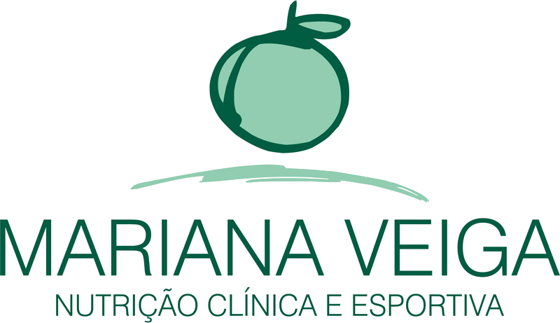
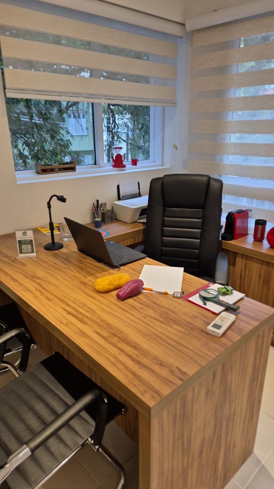
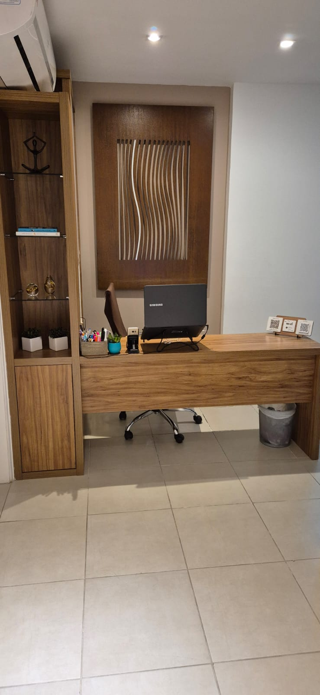

Nutrição que respeita sua rotina e seus objetivos
Acompanhamento próximo e individualizado com a nutricionista Mariana Veiga, em consultório no Jardim Botânico ou por atendimento online, onde você estiver.


Mais de 20 anos cuidando da nutrição das pessoas
Formada em Nutrição Clínica pelas Faculdades Integradas Bennett em 2004, Mariana construiu sua trajetória entre o esporte de alto rendimento e a nutrição clínica: atendeu na Federação de Atletismo do Rio de Janeiro (FARJ), no ambulatório da Santa Casa do Rio de Janeiro e em academias.
Desde abril de 2004 atende em consultório particular no Jardim Botânico, além de acompanhar pacientes online, sempre com um olhar próximo, técnico e acolhedor.
Um cuidado nutricional para cada fase e objetivo
Avaliação e acompanhamento nutricional individualizado para saúde, prevenção e tratamento.
Acompanhamento nutricional da gravidez ao pós-parto, respeitando cada fase da mulher.
Acompanhamento nutricional específico para as mudanças hormonais e metabólicas dessa fase.
Estratégias nutricionais para desempenho, recuperação e performance no esporte.
Planos sustentáveis para perda de peso com foco em saúde de longo prazo, preservação e ganho de musculatura.
Construção de hábitos alimentares duradouros, sustentáveis e sem dietas restritivas.
Presencial no consultório ou online, no seu ritmo


Atendimento presencial no Jardim Botânico, Rio de Janeiro, com toda a estrutura para avaliação clínica, física e comportamental.

Acompanhamento nutricional completo por videochamada, para quem está fora do Rio ou prefere a praticidade de casa.
A dieta é entregue por um aplicativo interativo, com registro de refeições, orientações personalizadas, receitas e acompanhamento contínuo entre as consultas.
Acompanhe dicas e bastidores no @marianaveiga2
Receitas, orientações nutricionais e o dia a dia do consultório, direto no Instagram da Mariana.
Seguir @marianaveiga2Jardim Botânico, Rio de Janeiro
Jardim Botânico, Rio de Janeiro - RJ
22461-000
Sábados (eventual): 8h às 14h
Domingo: fechado